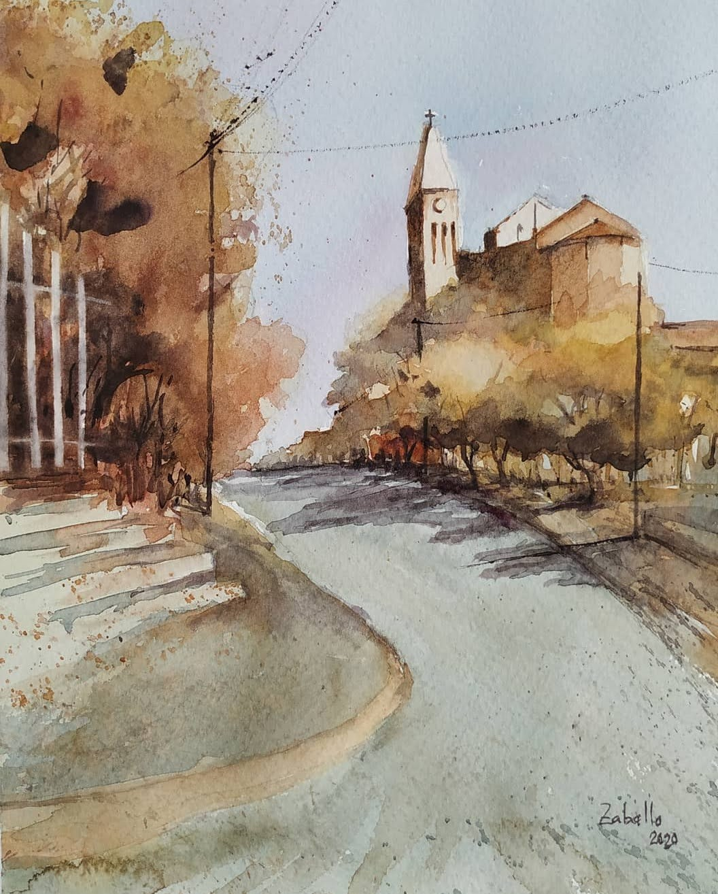
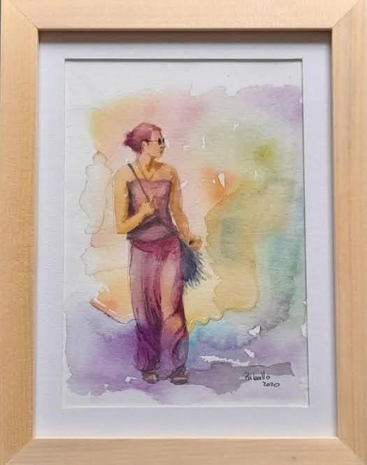
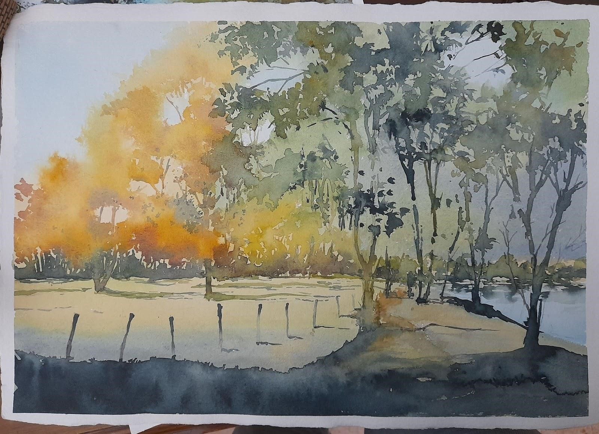
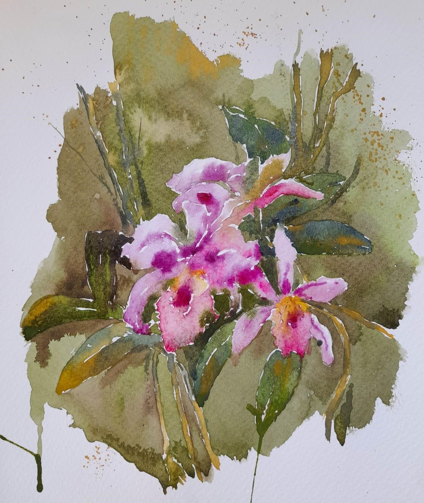

"AGUA, COLOR Y PINCELES"
Seminario de acuarelas
 Profesora: Ana María Zaballo
Profesora: Ana María Zaballo
Dirigida a personas que disfruten de actividades lúdico plásticas y deseen estimular la
creatividad.
No son necesarios conocimientos previos.
Tiempo de duración: dos horas y media.
Si queres saber los secretos de la acuarela, la propuesta de este seminario es conocer y
aplicar los principios básicos de la misma.
Experimentaremos con los pigmentos, el agua, distintos papeles y pinceles.
Aplicaremos la Teoría del Color para que logres en cada obra mezclas y gamas armónicas.
En cada encuentro se trabajará a partir de imágenes referenciales de distintas temáticas.
Analizaremos obras de acuarelistas reconocidos.
En las obras aplicaremos los efectos del agua y la acuarela; pintaremos sobre papel seco y sobre papel húmedo, usaremos materiales para lograr texturas visuales.
Temáticas:
- Paisaje
- Paisaje urbano
- Flores
- Figura humana
Materiales necesarios:
- Papel para acuarela de entre 190g y 300g, preferentemente con alto porcentaje de
algodón.
- Acuarelas
- Marcas recomendadas:
- Cotman (Winsor&Newton), Van Gogh,
Holbein,Rembrandt, Daniel Smith
- Colores sugeridos:
- Azul ultramar
- Azul Prusia
- Cobalto
- Cerúleo
- Amarillo de Cadmio
- Amarillo ocre
- Amarillo Limón
- Anaranjado de Cadmio
- Rojo de Cadmio
- Rosa Permanente
- Carmín
- Sepia
- Siena Tostado
- Blanco
- Negro
IMPORTANTE: Con respecto a los colores, con uno de cada color estaremos bien para comenzar ej: un
azul, un amarillo, un rojo.
- Pinceles:
- Tipos:
- Pelo natural o Pelo sintético
- Formas:
- Pinceleta
- Punta redonda: chico 4 o 6, grande 10, 12 o 14
- Pincel chato/ plano: chico 4 o 6, grande 10, 12 o 14
- Pincel atado de Casán o Pincel para Sumi- e
- Liner
- Paleta blanca, de superficie lisa no absorbente, con cavidad para pigmento y parte
plana para mezcla de colores.
- Rociador
- Recipiente para agua
- Papel absorbente tipo de cocina
- Cinta de papel
- Tablero de 35x45cm aprox. para montar la hoja de trabajo (preferentemente
impermeable)
- Lápiz de dibujo, goma, microfibra o lapicera
- Hojas o cuaderno para tomar apuntes



